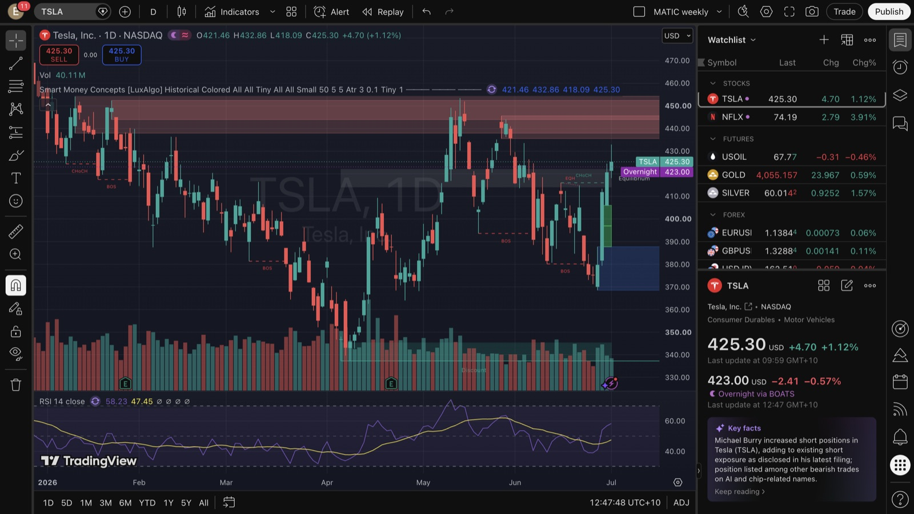
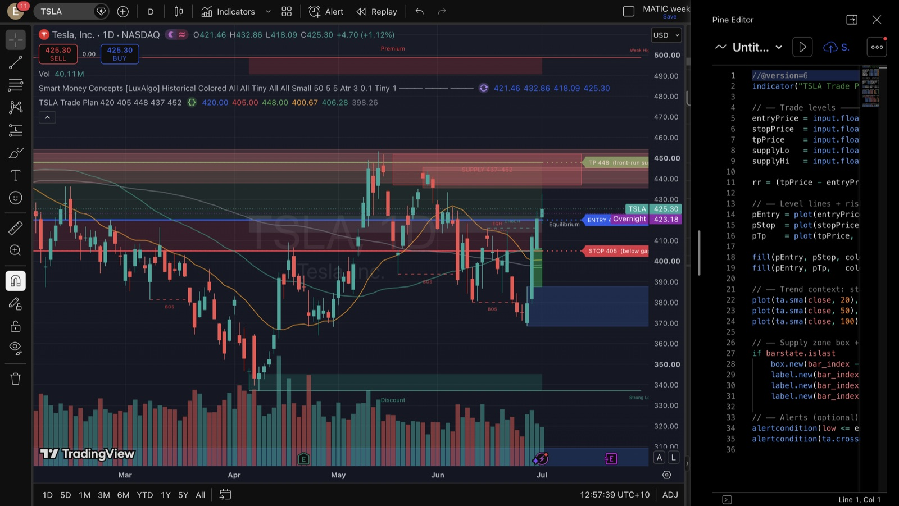
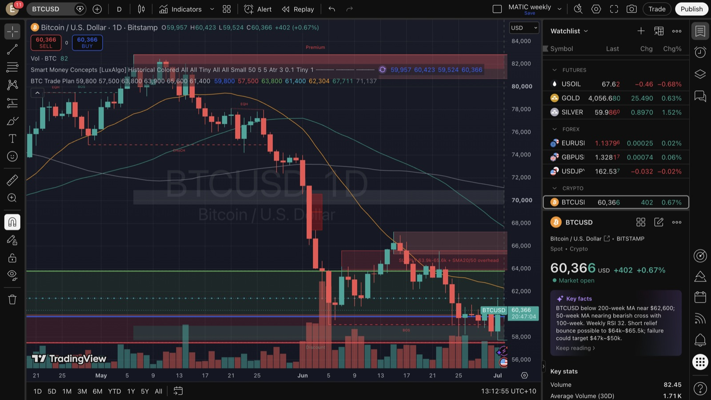

This free, open-source bridge lets Claude see and control your actual TradingView Desktop app — switch symbols, read candles and indicators, scan your whole watchlist, write & compile Pine Script, draw trade plans, manage alerts. No API key. Nothing leaves your machine.
You need TradingView Desktop (the app, not the website) and Claude Code (free with any Claude plan). Node.js 18+ if you don't have it.
Clone the open-source MCP server and install its dependencies.
The bridge talks to the app through Chrome DevTools Protocol, so TradingView must start with a debug flag. Quit TradingView first, then run:
scripts\launch_tv_debug.bat from the repo instead. Every restart of TradingView needs this flag — if you open it normally later, the connection drops until you relaunch this way.claude mcp list — you want tradingview ✔ Connected.Open a new Claude Code session and ask:
Claude flipped the chart through every watchlist symbol, pulled 150 daily candles each, computed trend/momentum/volatility for all of them — and picked the strongest setup, with reasoning.

Claude wrote a Pine v6 indicator — entry, stop, take-profit with risk/reward shading, supply zone, moving averages, alert conditions — compiled it in the Pine editor and applied it to the chart. Every level is an editable input.

Same flow on crypto: Claude read the structure (a liquidity sweep off the lows), built the setup with confirmation trigger and invalidation, and put it on the chart — including three ready-to-enable alert conditions.

It's your account, your limits. On the free/Basic plan TradingView allows 2 indicators per chart — Claude works within that (it swaps indicators in and out). Paid plans remove the friction.
All local. The bridge connects to the app on your machine only — no TradingView API, no credentials, no data sent anywhere.
AI can be wrong. Treat every setup as a starting point, not a signal. Size your own risk.
Follow for the full video walkthrough — watchlist scan to trade plan, live.
Follow @cloud9.markets →